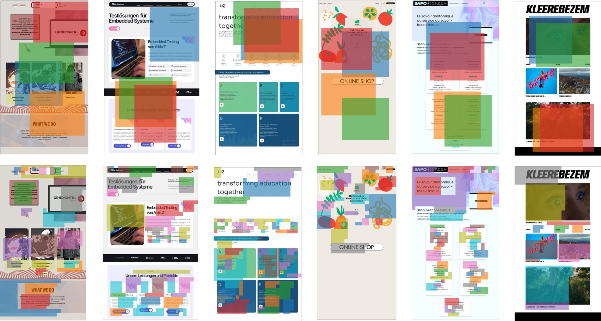
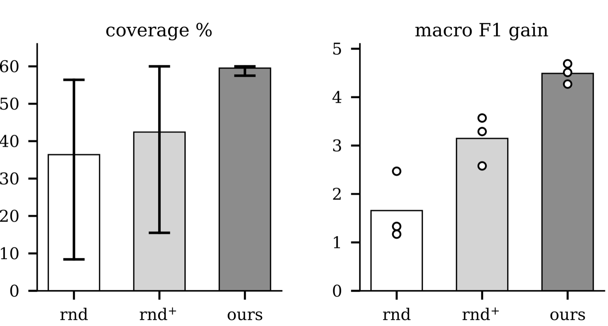
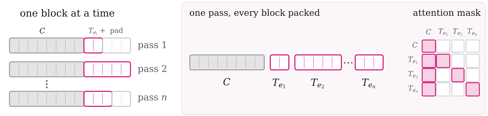
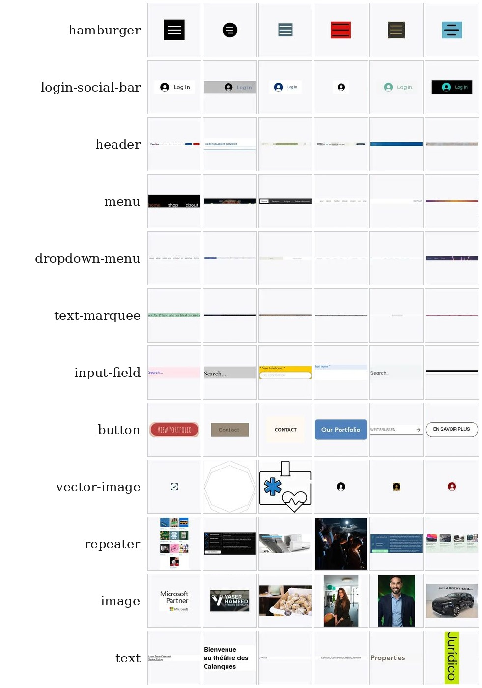

The seed-0 column gives the test macro F1 reported for each individual Wix checkpoint in its model card. The paper reports averages over three pretraining seeds. The frozen SigLIP2 baseline uses the original Google weights.
A web page is built from components, and recovering them from pixels underlies design tooling, accessibility, UI testing and software agents. Once rendered, a page holds two representations: the screenshot an encoder sees, and the structured document it was drawn from, which names every component and fixes its box. Prior work has read that document as context, or predicted it back as a target. We use it to author the pretraining mask. The sampler visits components in the twelve target classes from smallest to largest and aims to hide part of each while preserving visible context.
Our corpus is 136,277 rendered pages from Wix.com, a website-building platform where a single vocabulary names every component. We continue pretraining a SigLIP2 encoder with I-JEPA under this policy, and measure it with a linear probe that predicts each component's class: macro F1 rises from 61.5 to 66.0. To isolate the mask we pretrain again with random masking, changing nothing else: the difference is 1.3 macro F1 across three seeds (p = 0.045), and it is gained on the five classes a random draw under-covers, where ours masks more than half of every class's area. Our mask improves all twelve classes; the random draws leave some below the frozen SigLIP2 encoder.
We release the evaluation code and the mask and predictor code. The five pretrained encoders and 9,000 pages (the sealed test split and the split the probe trains on, with every component's class and box) are on Hugging Face.

The same six pages under both policies. Top: random masking is blind to the page, so components go untouched on one page and vanish whole on the next. Bottom shows blocks placed using the component boxes recorded in the page's document. Colors mark the target blocks to be predicted.

Coverage and the macro F1 gain that follows it. Coverage is the share of a class's patches the mask hides. Left: bars are the mean over the twelve classes, capped lines their full range. Right: the bar is the mean over three pretraining seeds, the dots those seeds. Coverage on the training pages, macro F1 on the test split.
| class | SigLIP2 | random | random⁺ | ours |
|---|---|---|---|---|
| dropdown-menu | 53.2 | +10.9 | +11.3 | +14.0 |
| menu | 65.6 | +4.8 | +6.9 | +9.1 |
| header | 77.8 | +4.2 | +4.7 | +7.5 |
| vector-image | 53.4 | +1.0 | +1.6 | +3.3 |
| text | 82.7 | +2.1 | +2.9 | +3.2 |
| button | 78.8 | 0.0 | +1.2 | +2.1 |
| login-social-bar | 62.1 | −6.7 | −4.1 | +2.0 |
| hamburger | 62.5 | −2.6 | −0.9 | +1.1 |
| text-marquee | 35.4 | +3.9 | +6.2 | +5.1 |
| repeater | 19.3 | +2.9 | +3.4 | +2.5 |
| image | 71.1 | +1.7 | +2.7 | +2.3 |
| input-field | 75.9 | −2.4 | +2.0 | +1.7 |
| macro F1 | 61.5 | +1.7 | +3.2 | +4.5 |
Per-class F1 on the test split, linear probe, mean over three pretraining seeds (Table 2 of the paper). The SigLIP2 column is the frozen encoder's F1; each Δ is the change from it under continued pretraining with that mask. Bold marks the best mask per class. Ours masks at the band (0.5, 0.7), selected on the validation split. Seed standard deviation of macro F1: ours ±0.21, random⁺ ±0.51, random ±0.71; for the gain over random⁺, a paired t-test across the three seeds gives p = 0.045.
Where the gain comes from. Coverage, the share of a class's patches the mask hides, is what separates the policies. A random draw covers seven classes at 44–56% and leaves five at 8–27%: hamburger, login-social-bar, header, menu and dropdown-menu. Ours hides more than half of every class's patches. Measured against random, random⁺ gains the same +1.5 on both groups; ours matches it on the well-covered classes (+1.6) and gains +4.6 on the thinly covered ones, which account for the whole 1.3-point lead over random⁺. Per class, the F1 gained follows the coverage added under ours (r = 0.72) and not under random⁺ (r = 0.05). It is not the amount masked: ours hides 34% of the page against about 50% for a random draw, and raising ours to that budget, by widening the band or adding blocks outside the components, moves validation macro F1 by at most 0.6 (Table 4 of the paper).
Class-balanced loss. The thinly covered classes also put the fewest patches into the loss, so we also balance the loss: every class's masked patches carry the same total weight. Over random⁺, balancing alone gains +2.0 macro F1 and our mask +1.3, but on different classes: ours leads on the five thinly covered (+3.2 against +1.8), balancing on the well covered (+2.1 against 0.0). Together they give the largest gain, +3.7 macro F1, best in nine of the twelve classes (Table 5 of the paper).
| Encoder | Hugging Face | Seed-0 test macro F1 (%) |
|---|---|---|
| SigLIP2 SO400M, frozen (starting point) | google/siglip2-so400m-patch16-naflex | — |
| random masking | Wix/ui-encoder-random | 62.66 |
| random⁺ masking | Wix/ui-encoder-random-plus | 64.07 |
| random⁺, class-balanced loss | Wix/ui-encoder-random-plus-bal | 66.63 |
| ours (component-conditioned) | Wix/ui-encoder-ours | 66.00 |
| ours, class-balanced loss | Wix/ui-encoder-ours-bal | 68.13 |
The seed-0 column gives the test macro F1 reported for each individual Wix checkpoint in its model card. The paper reports averages over three pretraining seeds. The frozen SigLIP2 baseline uses the original Google weights.

Left: one block at a time, as I-JEPA does. The context C is copied and re-encoded on every pass, and
blocks are padded to the longest in the batch. Middle, right: all blocks are packed into one sequence,
and an attention mask lets each target block see C and itself but never another block. C is encoded once, the
padding goes, and cost follows the patch count rather than the block count. Code:
components_masking/training/jepa/predictor.py.
Our mask gives one target block per component, fifteen on an average page and forty on a busy one. Predicting them one at a time would copy the context forty times, so the predictor reconstructs all of them in one pass, following CrossMAE's cross-attention decoding. The context attends only within itself, and each block attends to the context and to its own queries. A block is predicted from the same context as before, and the predictor is the same in every run, so the change cannot favour one mask over another.
| Starting encoder | SigLIP2 SO400M, patch 16, NaFlex, ≤ 1,024 patches per page |
| Objective | I-JEPA latent prediction, smooth-L1 over the masked patches; target encoder a frozen copy of the starting weights |
| Predictor | 6-layer ViT, width 384, 6 heads, randomly initialized; the context encoder's learning rate is zero for the first 500 steps |
| Data | 118,583 training pages (the 125,277-page train split, keeping pages whose components cover ≥ 10% of the page), effective batch 64, 17,000 steps (≈ 9 epochs) |
| Optimizer | AdamW (β₁ = 0.9, β₂ = 0.999), weight decay 0.05, gradient clipping 1.0; cosine schedule, peak LR 5e-5 after a 1,000-step warm-up |
| random mask | 4 target blocks per page, each 15–20% of it, aspect ratio 0.75–1.5, as in I-JEPA; the whole page is kept as context |
| random⁺ mask | 16 target blocks per page, each 2–8% of it: a page carries 15.6 components on average, and 2–8% spans their typical sizes |
| Our mask | per component, a contiguous block along its longer axis, sized to a share drawn from (0.5, 0.7) of its patches; children are masked first and the parent's block goes around what they keep visible |
| Compute | about 4.4 hours per run on four L40S GPUs, no more than a random draw costs |
from PIL import Image
from transformers import AutoImageProcessor, Siglip2VisionModel
repo = "Wix/ui-encoder-ours"
processor = AutoImageProcessor.from_pretrained(repo, use_fast=False) # Pillow resizing, as in the evaluation
model = Siglip2VisionModel.from_pretrained(repo).eval()
inputs = processor(images=Image.open("page.png").convert("RGB"), return_tensors="pt")
patch_features = model(**inputs).last_hidden_state # (1, 1024, 1152)The encoder reads pixels only. Component boxes shaped the pretraining mask and are not needed at inference.

9,000 rendered homepages with every component's class and box, in two splits:
| split | pages | components | role |
|---|---|---|---|
seed | 4,000 | 62,837 | fits the probe and selects its regularization |
test | 5,000 | 72,507 | held-out evaluation, read once |
from datasets import load_dataset
ds = load_dataset("Wix/ui-components")
row = ds["seed"][0]
row["image"] # PIL image of the page
row["classes"] # ["header", "menu", ...]
row["rectangles"] # [[x_min, y_min, x_max, y_max], ...]Boxes are in image pixels with the origin at the top-left.
Each page is one site's homepage, rendered in a headless browser 1,280 pixels wide and cut at the section
boundary closest to 2,160 pixels. Screenshot heights therefore vary, and every recorded component appears in the
screenshot. A component is a page element that the platform stamps with its own class token
(wixui-button, wixui-rich-text, …). Seventeen tokens map to the twelve classes; the
other 168, mostly layout containers, are left unlabelled.
| class | platform tokens |
|---|---|
text | rich-text, collapsible-text |
image | image, video-box, video-player |
menu | horizontal-menu, vertical-menu |
input-field | text-input, search-bar |
hamburger | hamburger-open-button |
The other seven classes (button, vector-image, header,
repeater, dropdown-menu, login-social-bar, text-marquee)
each come from the token of the same name.
The 136,277 pages split into train (125,277), seed (4,000), validation (2,000) and test (5,000), each page in exactly one. Seed and test are released.
Requirements: Python 3.12 and a CUDA GPU (the reported runs used 4× NVIDIA L40S). The script downloads the weights and evaluation dataset, runs the linear probe on all six encoders, and prints per-class F1 and test macro F1, with each Wix checkpoint's Hugging Face seed-0 score and the signed gap in F1 points. The paper reports averages across three pretraining seeds.
pip install -r requirements.txt
bash reproduce/reproduce.sh /path/to/workdir # 4 GPUs: 0,1,2,3
MODELS_PER_PASS=1 BATCH_SIZE=8 WORKERS=8 \
bash reproduce/reproduce.sh /path/to/workdir 0,0,0,0 # 1 GPU
Protocol. Each page is encoded unmasked at ≤ 1,024 patches; a component's feature is the mean of the
patches its box touches. A StandardScaler → LogisticRegression probe is fitted on up to
1,000 components per class from seed, with C chosen by 3-fold page-grouped
cross-validation, and scored once on all 72,507 test components (macro F1 over 12 classes).
The full protocol and reproduction notes are in the
code repository.
% Citation metadata will be added with the camera-ready version.